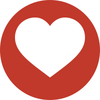
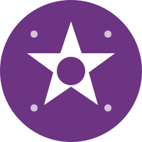
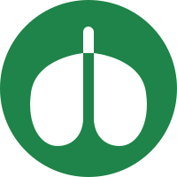
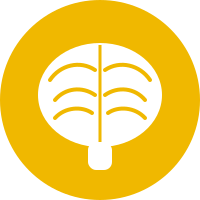
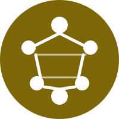

Who we are together
Seven teams, one church
Every member of the body has a part. These are the seven G7 teams, and what each one does for the rest of us.

GlorifyMusic, AV, service leading, prayer and the Lord's Table.
Home groups, KOG Kids, KOG Youth, 121s and Bible teaching.

GiftednessHelping each person find where God has gifted them, and training them to serve.
Morning tea, Sunday Dish, outings and making sure no one stands alone.

GoSRE, KOGWorx, Easy English, short-term mission and sharing the gospel beyond our doors.

GovernanceParish Council, Wardens, finance, property and the mission of the parish.

GlueAdmin, IT, maintenance and the practical work that holds everything together.
Giftedness team
Each member has a gift to use
The Giftedness team helps each person discover the gifts God has given them and find where to serve. It walks people from first contact to belonging, and then to serving.
What the icon says
- The star stands for the gifts God gives to each member.
- Purple (#6C3483) is the Giftedness colour in the G7 Design Scheme.
- Giftedness is the endocrine system in the body metaphor. Its work helps each part of the body serve well.
"Each one should use whatever gift he has received to serve others, as good stewards of God's varied grace." 1 Peter 4:10 (CSB)
Icon from the G7 Design Scheme: a white symbol on a team-colour disc.
Our loyalty to one another
Five commitments for every team
Trust grows from small, repeated habits. These are the habits we ask every team to practise.
- Cover for one another.Every role should have a trained second person, so that no one carries a ministry alone and no one is left without help when life gets busy.
- Speak well of one another.When someone is not in the room, we speak about them as we would want to be spoken about. We praise in public and raise concerns in private.
- Go to one another first.If something troubles us, we go to the person directly and gently, before we talk to anyone else about it.
- Pray by name.Each team meeting opens with prayer for the people in it, by name, and for the family and work commitments each person carries.
- Celebrate faithful service.We thank people for their service, publicly and specifically, and we mark the growth we see, including the first time someone leads something new.
Where we are
Growing the bench, not ranking the people
Training is for every member, and it is a way of sharing the load. These figures come from our July 2026 gifts review, counting 67 people in our church community.
Our aim is simple: every serving role has a trained second person by the end of 2026. Each step toward that goal is a gift to the whole body.
How people join us
Welcome to the Team
Our pathway for those who want to serve is called the Welcome Pathway. It includes the Welcome to Life ministries, the Welcome Home ministries, the Home Group ministries and the Welcome to the Team ministry. Once a person has understood the church's theological principles and practices, they will be provided with the appropriate leaders' training (with safe ministry, if applicable). Each step helps a person know they belong before they are given a task.
Closing prayer
"Make every effort to keep the unity of the Spirit through the bond of peace." Ephesians 4:3 (CSB)
"Do nothing out of rivalry or conceit, but in humility consider others as more important than yourselves." Philippians 2:3 (CSB)
Father, make us one body in Christ. Give us trust in one another, loyalty to your church, and joy in the gifts you have given to each member. Amen.